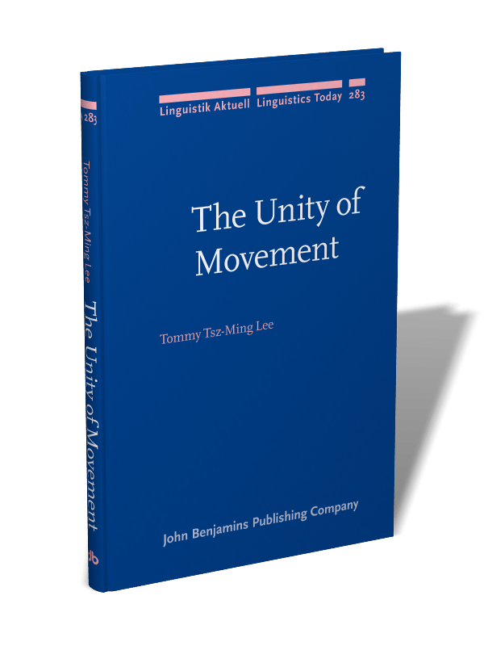
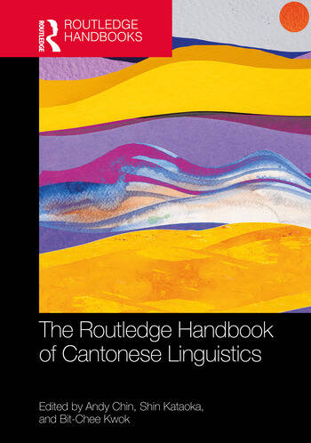
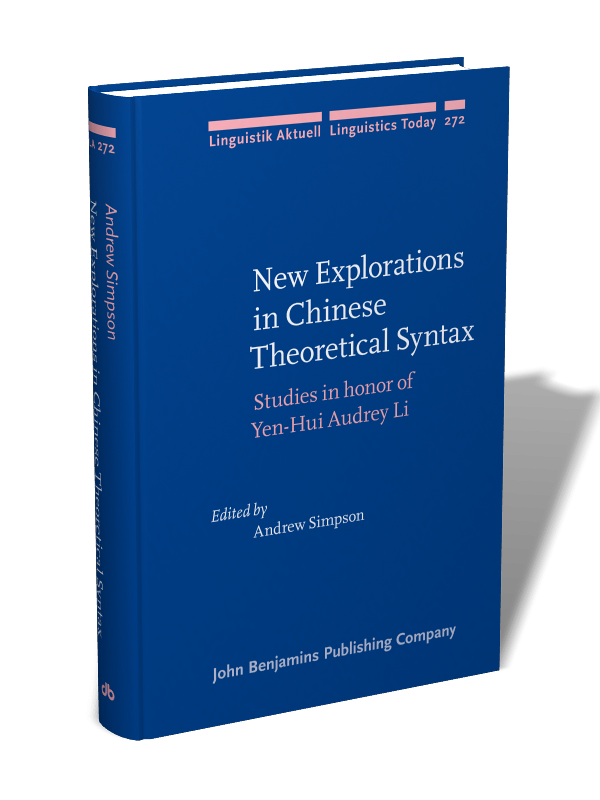

Papers
* student co-author. Co-authors are listed as [with …] when I am first author; otherwise the full author order is given.
Manuscripts
(Comments are most welcome!)
Submitted. From demonstrative to discourse: the cartographic footprint of Cantonese gam2.
In revision. Partial deletion at word level: discontinuous predicates in Cantonese. [with Ka-Fai Yip]
In revision. The privileged status of phases: licensing VP movement and ellipsis in Mandarin and Cantonese. [with Victor Junnan Pan]
In revision. Surface and deep anaphora in sluicing and stripping: symmetries and asymmetries in Mongolian and Uyghur. [with Xue Bai]
Submitted. Public digital humanities reflections on the “Cantonese Master Challenge”. In Cantonese and digital humanities. Hong Kong: PolyU Press. [Yip-Po Lai, Mei-ying Ki, Chaak-ming Lau, Tommy Tsz-Ming Lee, Kam-Pang Wong & Ka-Fai Yip]
Publications
Books
- 2024 . The unity of movement: evidence from verb movement in Cantonese. Amsterdam: John Benjamins. 214 pp. DOI: 10.1075/la.283

Journal papers
Accepted. Clausal parentheticals in disguise: the borrowing of which in code-mixing speech in Hong Kong Cantonese. Acta Linguistica Academica.
2026 . Epistemic indefinites in Cantonese: a case study of m-zi “not-know”. Language and Linguistics. Online first.
2026 . “Sloppy” identity reading and sluicing-like constructions in Mandarin, Uyghur and Mongolian. Current Research in Chinese Linguistics 105(2): 421–440. [with Xue Bai]
2026 . Cantonese classifiers at the syntax–semantics interface. FLaP FIRST 2: 17–33.
2025 . Online quiz game “Cantonese Master Challenge”: gamifying linguistics popularization and crowdsourced data collection [in Chinese]. Journal of Digital Archives and Digital Humanities 15: 85–124. [Yip-Po Lai, Mei-ying Ki, Chaak-ming Lau, Tommy Tsz-Ming Lee, Kam-Pang Wong, Oscar Hok-Yuen Wong & Ka-Fai Yip]
2024 . Hyperraising, evidentiality, and phase deactivation. Natural Language & Linguistic Theory 42: 1527–1578. [with Ka-Fai Yip]
2023 . Last but not least: a comparative perspective on right dislocation in Alasha Mongolian. Journal of East Asian Linguistics 32(4): 459–495.
2021 . Asymmetries in doubling and Cyclic Linearization. Journal of East Asian Linguistics 30: 109–139.
2020 . Defending the notion of defocus in Cantonese. Current Research in Chinese Linguistics 99(1): 137–152.
2017 . Defocalization in Cantonese right dislocation. Gengo Kenkyu (Journal of the Linguistic Society of Japan) 152: 59–87.
Book chapters
- 2026 . Separable verbs in Cantonese. In Andy Chin, Shin Kataoka & Bit-Chee Kwok (eds.), Routledge handbook on Cantonese linguistics, 23 pp. London: Routledge. [with Ka-Fai Yip]

- 2022 . Modal movement licensed by focus. In Andrew Simpson (ed.), New explorations in Chinese theoretical syntax: studies in honor of Yen-Hui Audrey Li, pp. 165–192. Amsterdam: John Benjamins. [Ka-Fai Yip & Tommy Tsz-Ming Lee]

Proceedings
To appear. Deriving pseudogapping in Chinese. Proceedings of NACCL 38. [Yuyang Liu & Tommy Tsz-Ming Lee]
To appear. Optional but not free: licensing Focus Projection in East Asian languages. Nanzan Linguistics.
To appear. Revisiting gam2 in Cantonese: from demonstrative to sentence-final particle. Proceedings of Yue 28.
To appear. A conjunction approach to clausal wh-doublets in Cantonese. Proceedings of Yue 28. [with Hok-Yuen Wong]
To appear. Last but not least: right dislocation in Alasha Mongolian. Proceedings of WAFL 16.
2026 . Non-agreeing resumptive pronouns in Mandarin Chinese. Proceedings of SICOGG 28, pp. 314–323. [Jianing Yang* & Tommy Tsz-Ming Lee]
2026 . No meaning why: Chinese why-expressions under grumble predicates. Proceedings of SICOGG 28, pp. 304–313. [Wenze Wu* & Tommy Tsz-Ming Lee]
2026 . Pseudogapping parameters. Proceedings of the Linguistic Society of America 11(1). [Yuyang Liu & Tommy Tsz-Ming Lee]
2025 . Predication in disguise: which-constructions in Hong Kong Cantonese code-mixing speech. Papers from the International Workshop on the Syntax of Predication and Modification 2024, pp. 87–100.
2024 . What’s borrowed, and what’s not: revisiting the which-construction in Hong Kong Cantonese. Buckeye East Asian Linguistics 9: 83–93 (Proceedings of Yue 27).
2024 . Licensing VP movement and ellipsis in Mandarin and Cantonese. Proceedings of WCCFL 40, pp. 192–201. [with Victor Junnan Pan]
2023 . A structural account on the non-uniform information structure in right dislocation. Proceedings of SICOGG 25, pp. 168–176.
2023 . Focus Intervention Effects of verb movement in Cantonese. Proceedings of NACCL 34.
2023 . ATB-movement and parasitic gaps: from the perspective of head movement. University of Pennsylvania Working Papers in Linguistics 29(1), Article 13 (Proceedings of PLC 46).
2022 . Genuinely tenseless: encoding time in Cantonese. Proceedings of SALT 32, pp. 144–164. [with Roumyana Pancheva & Maria Luisa Zubizarreta]
2022 . Discontinuous predicates as partial deletion in Cantonese. University of Pennsylvania Working Papers in Linguistics 28(1), Article 5 (Proceedings of PLC 45). [Sheila Shu-Laam Chan, Tommy Tsz-Ming Lee & Ka-Fai Yip]
2021 . Movement of quantificational heads. Proceedings of NELS 51, vol. 2, pp. 67–76.
2021 . Deriving separable verbs in Cantonese. Buckeye East Asian Linguistics 5: 94–104. [Ka-Fai Yip, Tommy Tsz-Ming Lee & Sheila Shu-Laam Chan]
2021 . Raising, phase unlocked. Proceedings of WCCFL 38, pp. 274–282. [with Ka-Fai Yip]
2021 . Verb doubling and Cyclic Linearization. Proceedings of WCCFL 38, pp. 264–273.
2021 . Right dislocation of verbs in Cantonese: a case of head movement to specifier. In Crossing-over: new insights into the dialects of Guangdong, pp. 104–121 (Proceedings of Yue 21).
2021 . Specific unknowns: a case study of epistemic indefinites in Cantonese. Proceedings of the Linguistic Society of America 6(1): 107–117.
2020 . Strength in deontic modals as acceptability and optimality. Proceedings of NACCL 32, pp. 247–258.
2020 . Generalized Scope Economy. Proceedings of NACCL 32, pp. 345–360. [Ka-Fai Yip & Tommy Tsz-Ming Lee]
2020 . Expressing ignorance beyond the nominal domain in Japanese: a comparative view. Japanese/Korean Linguistics 26 (poster papers).
2020 . Hyperraising and evidentiality. Proceedings of SICOGG 22, pp. 163–173. [with Ka-Fai Yip]
2019 . Quantifier-Raising a head. Proceedings of GLOW in Asia XII & SICOGG 21, pp. 160–172.
2019 . Head movement with semantic effects: aspectual verb raising in Cantonese. Proceedings of the Linguistic Society of America 4(1): 59:1–11.
2018 . Deontic modality in Japanese: positioning the expressions of recommendation. Japanese/Korean Linguistics 25 (poster papers). [with Tony Tsz-Fung Lau]
2018 . Epistemic indefinites and reportative indefinites in Cantonese. Proceedings of PACLIC 32. [with Hok-Yuen Wong]
Theses/Dissertations
2022 . Towards the unity of movement: implications from verb movement in Cantonese. Ph.D. dissertation, University of Southern California.
2019 . Quantifier-Raising a head. M.A. thesis, University of Southern California.
2017 . Focus and defocus in Cantonese right dislocation and its syntactic derivation. M.A. thesis, Kyoto University.